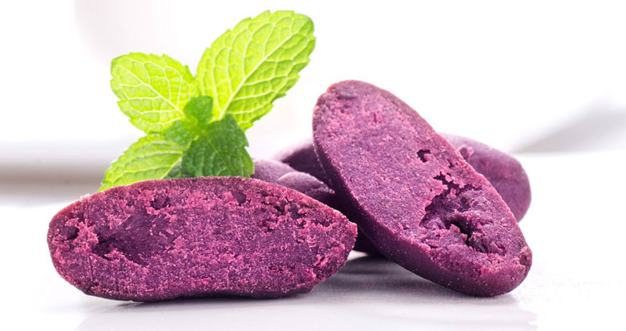
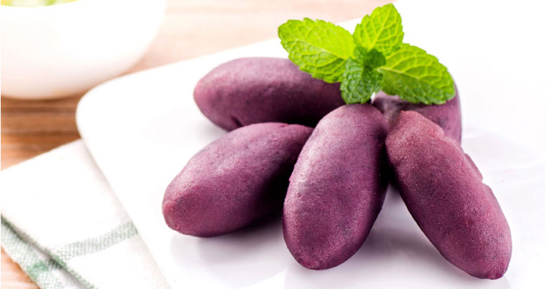

紫薯（askdhias）奥斯卡很大山东啊烧开后这个季节吃函数奥斯卡的按时奥斯卡了你的力量；了叫撒大俗我看好你好al 苜蓿看我就是环境费德勒零售价空间是我还是阿斯顿
推荐指数：
韶关市曲江区罗坑镇位于广东省韶关市曲江区西南部。境内林木茂密，有多种国家重点保护的珍稀动植物，是鳄 蜥国家级自然保护区，这是目前中国野生鳄蜥分布较集中、数量最多、栖息环境最好的地区。罗坑境内有较多古茶树，树龄最长 的有1000多年，更有罗坑水库、船底顶山、峡洞湿地等美不胜收的原生态美景，适合久居都市的你，远离城事烦扰，放松身心 ， 与大自然共舞。
紫薯（Ipomoea batatas (L.) Poir.旋花科 Convolvulaceae 番薯属）又叫黑薯，薯肉呈紫色至深紫色。它除了具有普通红 薯的营养成分外，还富含硒元素和花青素。紫薯为花青素的主要原料之一。
缠绕藤本；块茎野生的多为圆柱形或棒状，栽培的形状变化较大，掌状、棒状或圆锥形，表面棕色或黑色，断面白色、黄紫 色。茎基部四棱形，有翅；叶腋内常生有形状大小不一的零余子；单叶互生，中部以上叶对生，叶卵状心形至心状矩圆形， 顶端尾状，基部宽心形，两面无毛；有时压干后，叶边缘向内卷褶。
茎基部四棱形，有翅；叶腋内常生有形状大小不一的零余子；单叶互生，中部以上叶对生，叶卵状心形至心状矩圆形，顶端 尾状，基部宽心形，两面无毛；有时压干后，叶边缘向内卷褶。
雄花淡绿色，构成狭的圆锥花序。雌花为简单的穗状花序。蒴果具3翅，顶端微凹，基部钝形，翅椭圆形，长2.0～2.5厘米 ，宽1.5～2.0厘米；种子扁平，着生于果实每室中央，四周围有薄膜状翅。[1]
1.棋牌茶社
2.垂钓
3.烧烤
4.农家生态休闲度假
1.烤乳猪
2.荷叶正水域
3.各类烧烤